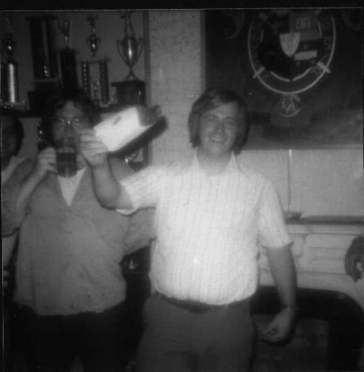

Revitalizing the House Corporation, Decline and Rebirth of the Chapter—The
Late 60’s through 70’s
Revitalizing the House Corporation
A special meeting was called together for Saturday
June 20th 1970 to discuss the reformation of the house corporation since the
mortgage was to be paid up in the next three years and the title to the house
had to be turned over to some entity, but to whom? If there was no person or
group to assume title to the house there would be a very serious problem. Meeting
details1, details 2
Recruitment for the house corporation and alumni chapter were
being pushed.
In October of 1970, after several years of strained relations, the neighbors
at Sidney Place worked together to try and kick
Lambda Chi off the block and send them to a more suitable location. The
nieghbors were fed up with the garbage in front of the house, fire and structural
hazards in both houses, the noise level late at night, incedents of trespassing
on rooves of adjacent buildings, and alleged acts of hostility towards the neighborhood
residents. More details on this situation can be seen in the meeting minutes
between J.R. Lannon, Dean of Men, and representatives of Theta Upsilon Zeta,
Lambda Chi Alpha Fraternity. Meeting Page 1, Page
2, Page 3. Needless to say legal
action was then taken.
The need to reform the House Corporation was becoming very clear to many alumni
and the wheels finally began to turn. It turns out
that, the House Corporation still existed, but under the name of Theta Kappa
Nu and very few of the board members remained . The corporation would have to
be renamed with new officers appointed. Details 1,
details 2, details 3.
A letter was sent out to try and get a quorum of the 1942
directors.
Once quorum was attained a special meeting of the
board of directors was announced. At this meeting several items were discussed
such as the welcoming of new members, renaming of the corporation, and the idea
of electing new officers. Details 1, details
2, details 3, details
4
On April 3rd 1971 nominations for new officers
and directors of the house corporation were finally made. The election was
to take place on May 22, 1971, which would also mark the first official meeting
of the House Corporation in 27 years. All the proposed directors were elected
unanimously at the meeting. The house corporation was up and running once again,
but with a new name selected: Theta Upsilon of Lambda Chi Alpha Corporation
Mortgage Burning September 9th 1972
Originally purchased in 1940, the chapter house was finally paid for! The chapter
now had an active corporation, an active alumni chapter, and no mortgage!
Events for the day included: 10:00AM House Corporation Board of Directors Meeting;
1:00 PM Alumni Chapter Meeting; 3:00PM The mortgage goes up in smoke!!!; 3:30PM
Barbeque; 8:00PM Celebration Party.

.
Deline and Rebirth of the Chapter
In June of 1976, Theta Upsilon Zeta of New York Poly, once a thriving chapter
of 60, was down to only 3 senior brothers. These remaining brothers were left
bearing the burden of a $100,000 historical landmark brownstone house in a metropolitan
area where annual expenses approached $8000 a year with no allowance for the
much needed maintenance and repair.
Luckily for this chapter it had a handful of caring alumni. Bill De Lamater,
Bob Schwab, Don Hayes, Joe Giardina, and Tony Ammaral, all sat down and discussed
and came up with,“When we started our alumni chapter in 1966 we agreed
not to interfere with the active chapter and to remain available for assistance
only upon request of the actives. Such request has not come and soon the chapter
and the house that holds the memories of our college days will be gone. Therefore,
I move that we violate our bilaws, take charge of the fall rush, and stay in
charge until a healthy, active chapter exists.” The chapter had tried something
similar to this back in 1974. details 1, details
2
Bob Schwab became the overall coordinator; Don Hayes was in charge of getting
the list of the incoming freshman and sorting it for mailings and personal contacts,
as well as acting as a liaison with national; Joe Giardina was in charge of
preparing the overall plan and supervising it’s execution; Tim Kamel, responsible
for contacting alumni and soliciting their aid and their participation in meetings;
Steve Gentile, in charge of contacting Freshman initially by letter and then
arranging follow-ups with phone calls for a pre-school rush on August 14th and
for the main rush on September 9th; Bob Conroy was in charge of physical preparation
of the house; and Harry Raymond for food, drinks, posters, handouts, etc.
The first step was to devote pre-school rush to the incoming freshman class
from Brooklyn Technical High school, since that score high scholastically and
the school typically supplied about 25% of the Freshman class. They also have
already formed friendship groups so may come with friends.
The list of 35 target candidates was developed and rules were set up about contacting
and rushing the candidates:
1. No lying. We may only have three active brothers but we have more spirit
and alumni support than our competitors.
2. Don’t promise anything that you can’t deliver.
3. No negative selling. Sell our strengths, not our competitors weaknesses.
4. Don’t apologize for our present state. Stress the opportunity available
to a new initiate to participate in the development of the chapter and his own
character.
5. Encourage the candidates to visit all fraternities and then choose the one
he prefers. He will prefer us because we are the best.
On August 14th, of the 35 invited, 22 replied saying that they would attend,
and 17
actually showed up. All the events scheduled for the day went according to plan
and by the end of the day five candidates associated with the house.
With pre-school rush behind them, the brothers are now more confident and were
eagerly preparing for rush on September 9th. In addition, Frank Maes and Greg
Schmall from national headquarters join in offering valuable assistance to the
preparation of this rush. This time around several hundred candidates are invited
to the events.
On the day of rush there is a booth set up to attract more candidates to the
house. Posters and handouts are used, as well as raffle tickets. To see if you
had won the raffle you had to take a trip to the house where the winning number
was posted. At the house there were activities taking place. Eight more candidates
are associated by the end of this day and within the week following.
Don Hayes, John O’Brien, and Steve Gentile, each with the title of one-third
Kappa formed a team to educate the group of aspirants. Approximately two months
later the group is ready to be initiated. John O’Brien assumes the duties
of Hi Phi and with the assistance of twenty rusty alumni performs an initiation
ceremony.
Now that there was a somewhat sizeable group of brothers the development phase
had to begin. The appointed officers were sent out to run the chapter with the
alumni watching over their shoulders. Alumni attend the chapter meetings and
social events as the junior actives developed into strong, responsible, devoted
brothers. These brothers all take their roles seriously and the chapter begins
to come alive again.
Not only was the chapter solidly getting back on its feet, but before the semester
was over they had two young men who had been pledges at other fraternities de-pledge
and come knocking on LXA’s door looking to associate. These two had come
in contact with the new initiates in the class and liked what they had heard
over what they were already receiving at other fraternities. Later, those two
young men became dually initiated brothers of LXA.
The enthusiasm of the chapter carried into what would historically have been
an uneventful rush. Instead the chapter initiated another 3 brothers.
The rebuilding house was then on to the Fall Rush of 1977. The institute began
to over react to the low on confidentiality of personal information by refusing
to release the list of freshman to fraternities. Each house was only allowed
one mailing which had to be approved by the dean. The letters were written by
the house, but the mailing information was affixed to the letters by the school.
There was no way of providing follow-up since the house would never see the
addresses of the potential candidates. How would the house get around this major
obstacle?
The chapter figured that LXA letters would have a small chance of being read
by the incoming freshman, but a letter from the institute, that would be. The
mailing was then constructed as a questionnaire where the candidates would list
their interests and most importantly his contact information which had to be
returned within two weeks. Constantinos Chantzis was made to sign the letter,
but not with his actual given name. Constantinos nickname given by the house
was Deanos – translated into English is Dean. So, Dean Chantzis signed
the letter with the given title “chairman” to make it appear an official
document from the school. Within two weeks contact information of the candidates
was obtained and pre-school rush was up and running.
Joe Giardina then contacted the alumni offive of the Institute and obtained
permission to deliver a five minute speech to the incoming freshman at orientation
on the importance of fraternities. The speech was presented by Frank Bloise,
the sophmore high Alpha. Frank’s presentation style attracted much attention,
which gained him and the house recognition. After the presentation candidates
were shuttled 40 miles to the chapter house where fall rush was just beginning.
At the end of the rushing season the numbers were released. Of the five fraternities
on campus three received zero associates, one received one associate, and LXA
received ten!
On April 21, 1978 Theta Upsilon conducted its first Founders Day celebration
in five years. It was attended by seventy actives, alumni, and wives. The celebration
was also attended by a very special guest, Dr. S George Dirghali, who came all
the way from Syracuse. Doc was impressed and inspired by the feeling of brotherhood
that filled the room. “It is real. The chapter is alive and well.”
|
{kind=link}
{kind=link}
{kind=link}
{kind=link}
{kind=link}
{kind=link}
{kind=link}
{kind=link}
{kind=link}
{kind=link}
{kind=link}
{kind=link}
{kind=link}
{kind=link}
{kind=link}
{kind=link}
{kind=link}
{kind=link}
{kind=link}
{kind=link}
{kind=link}
{kind=link}